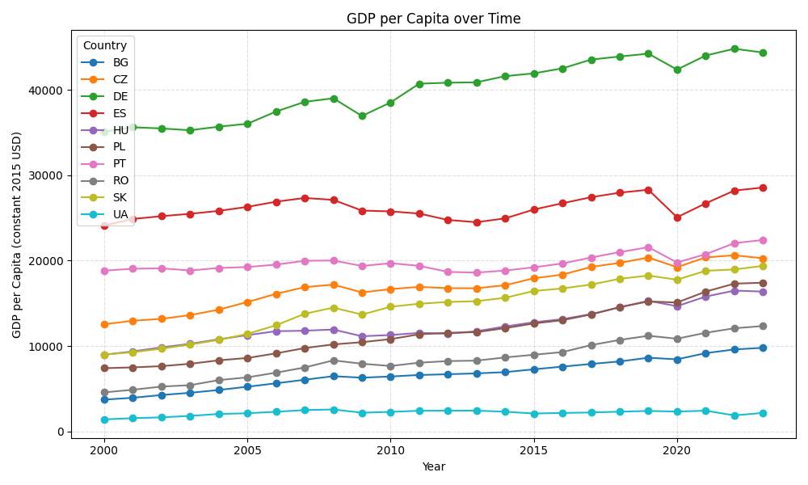
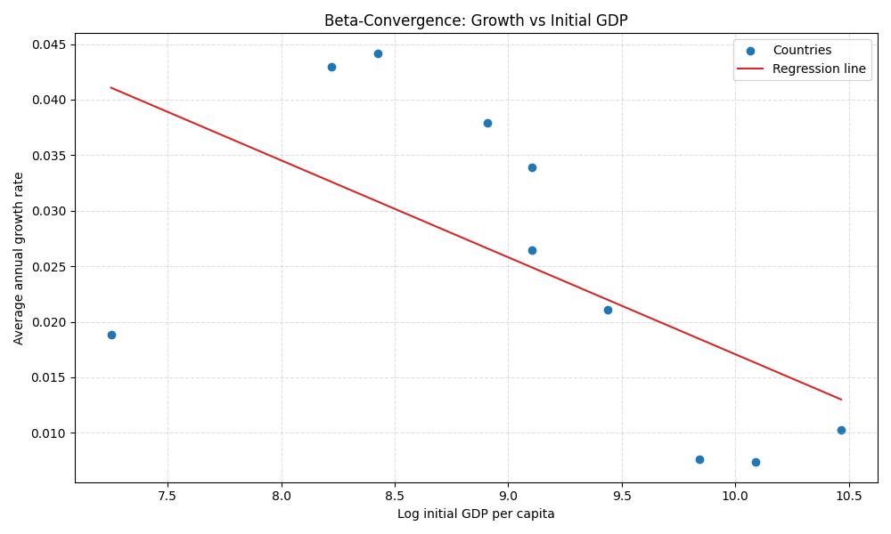
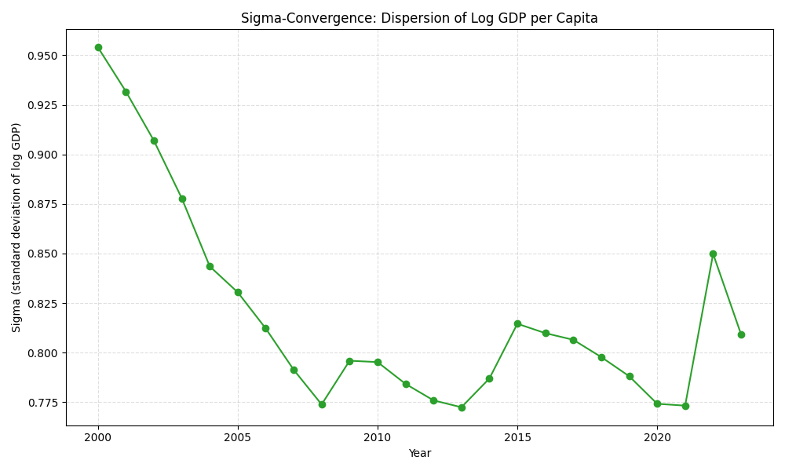

Pytanie badawcze: Czy dane empiryczne potwierdzają konwergencję przewidywaną przez model Solowa?
Odpowiedź na pytanie badawcze:
Tak, dane empiryczne potwierdzają konwergencję przewidywaną przez model Solowa dla badanej próby krajów. Zarówno beta-konwergencja, jak i sigma-konwergencja są obserwowane: biedniejsze kraje rosły szybciej, a różnice dochodowe między krajami zmniejszyły się w badanym okresie. To sugeruje, że kraje zbliżają się do siebie pod względem dochodów per capita.
Źródło danych: World Bank API / offline CSV
Okres: 2000 - 2023
Kraje: POL, DEU, CZE, SVK, HUN, ROU, BGR, UKR, ESP, PRT
| Kod | Kraj | Rok początkowy | Rok końcowy | PKB początkowy | PKB końcowy | Wzrost roczny |
|---|---|---|---|---|---|---|
| BG | Bulgaria | 2000 | 2023 | 3717.93 | 9787.27 | 0.0430 |
| CZ | Czechia | 2000 | 2023 | 12543.94 | 20272.59 | 0.0211 |
| DE | Germany | 2000 | 2023 | 35104.13 | 44368.99 | 0.0102 |
| ES | Spain | 2000 | 2023 | 24106.88 | 28558.63 | 0.0074 |
| HU | Hungary | 2000 | 2023 | 8979.74 | 16375.05 | 0.0265 |
| PL | Poland | 2000 | 2023 | 7401.58 | 17410.38 | 0.0379 |
| PT | Portugal | 2000 | 2023 | 18822.09 | 22417.16 | 0.0076 |
| RO | Romania | 2000 | 2023 | 4569.31 | 12340.82 | 0.0441 |
| SK | Slovak Republic | 2000 | 2023 | 8997.21 | 19383.37 | 0.0339 |
| UA | Ukraine | 2000 | 2023 | 1409.22 | 2164.26 | 0.0188 |
Obserwuje się beta-konwergencję (współczynnik β = -0.0087). Kraje o niższym początkowym PKB per capita rosły szybciej niż kraje bogatsze. Współczynnik determinacji R² = 0.3428 sugeruje, że około 34.3% zmienności tempa wzrostu można wyjaśnić początkowym poziomem dochodu. To wskazuje na zjawisko doganiania biedniejszych krajów w stosunku do bogatszych, co jest zgodne z przewidywaniami modelu Solowa.
Obserwuje się sigma-konwergencję. Rozproszenie dochodów (mierzone odchyleniem standardowym log PKB) zmniejszyło się z 0.9540 w roku 2000 do 0.8092 w roku 2023, co stanowi zmianę o -15.18%. To oznacza, że różnice dochodowe między krajami zmniejszyły się, a kraje stały się bardziej podobne pod względem dochodów per capita.



Tak, dane empiryczne potwierdzają konwergencję przewidywaną przez model Solowa dla badanej próby krajów. Zarówno beta-konwergencja, jak i sigma-konwergencja są obserwowane: biedniejsze kraje rosły szybciej, a różnice dochodowe między krajami zmniejszyły się w badanym okresie. To sugeruje, że kraje zbliżają się do siebie pod względem dochodów per capita.